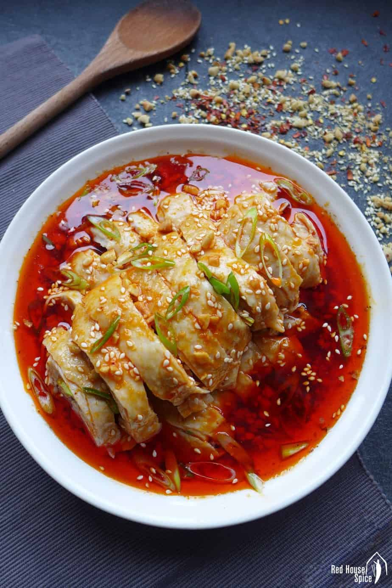

소위 무침/소힘줄 무침
아무나 중국 식품 가게에 가면 소위/소힘줄 무침이라고 하면 다 압니다. 그 중에 노란색 포장을 가진 브랜드가 가장 좋습니다. 이 브랜드는 중국에도 없는 브랜드라서 예시 그림을 찾아드릴 수 없습니다. 내용물은 대략 그림과 같습니다.

하이디라우의 koushuiji
닭고기 무침인데 조리가 빨라서 하이디라우에 갈 때 마다 이것이 가장 먼저 나옵니다.